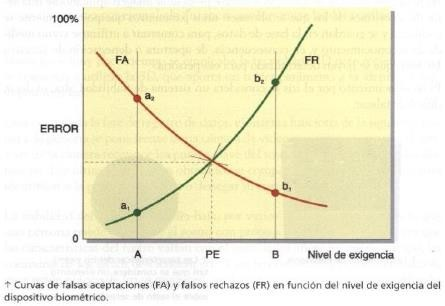

La biometría es el estudio de los métodos que permiten reconocer seres humanos basándose en rasgos físicos, de conduta y/o genéticos.
La biometría permite autentificar personas utilizando fórmulas o técnicas matemáticas para asegurar que la persona es quien dice ser sin prácticamente error.
Cuando hablamos de características físicas, nos estamos refiriendo a rasgos como la huella dactilar, el iris del ojo o las venas de la mano.
Cuando hablamos de factores genéticos, fundamentalmente nos estamos refiriendo al ADN. Y de conduzta, a rasgos como la voz o la forma de andar.
El origen de la biometría puede situarse en torno al siglo XIV en China, con la aparición de restos de huellas dactilares impresas en arcillas
En occidente durante el siglo XIX un policía francés, Alphonse Bertillón, ideó un método para identificar a los delincuentes que consistía en la toma de medidas de alguna parte del cuerpo, así como marcas y cicatrices que permitían identificar a los sujetos. Esta ciencia se conoce con el nombre de antropometría, que más adelante se expandirá por el resto de Europa y Estados Unidos. Sin embargo, este sistema no era fiable porque aunque remota, existe la posibilidad de que dos personas tengan las mismas medias y marcas parecidas.
En 1892 (Finales del siglo XIX), el antropólogo Francis Galton propuso un sistema de identificación mediante huella dactilar conocido con el nombre de dactiloscopia. Se basa a grandes rasgos en el dibujo que forman las líneas de las yemas de los dedos de cada persona, que son invariables a lo largo de la vida de una persona.
Actualmente el método más fiable para identificar a una persona es el ADN, pero no ha desplazado a la dactiloscopia por la complejidad y el coste de este método.
Para que un control de acceso basado en un sistema biométrico pueda considerarse fiable debe cumplir 4 indicadores:
El reconocimiento biométrico puede utilizarse de 2 formas distintas:
El proceso de verificación es uno a uno ( 1 : 1 ), mientras que el de identificación es uno a varios ( 1 : N ).
Teniendo en cuenta que un sistema biométrico no es infalible: bien porque marquemos un nivel de exigencia muy alto, que nos produzca muchos falsos rechazos; o por el contrario marquemos un nivel de exigencia muy bajo, que produzca muchas falsas aceptaciones. Habrá que encontrar un punto de equilibrio entre ambas cosas.

El punto de equilibrio (PE) se admite como bueno si se da una tasa inferior al 0,1% de falsas aceptaciones e inferior al 2% de falsos rechazos.
Teniendo en cuenta que esta tecnología está en constante evolución y que por ello aparecen nuevos sistemas continuamente, actualmente los más conocidos son: